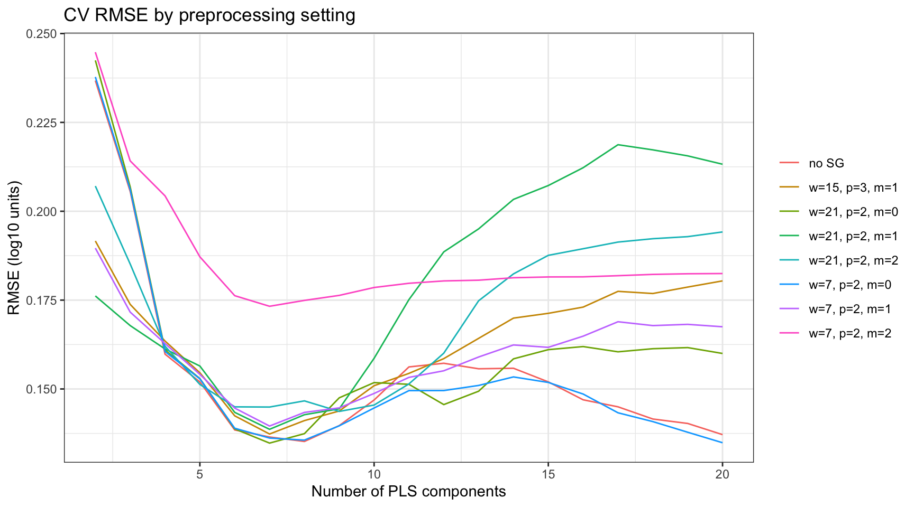
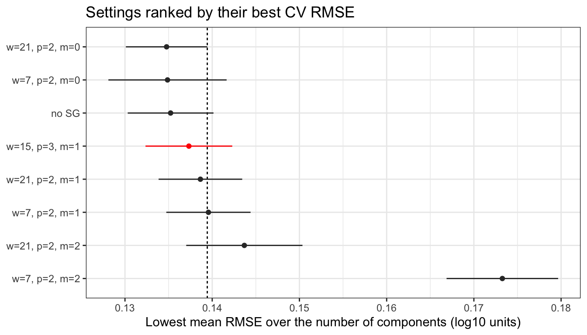

library(here)
library(tidyverse)
library(tidymodels)
library(plsmod)
source(here("R", "prepare_data.R"))
source(here("R", "steps.R"))
source(here("R", "split.R"))
theme_set(theme_bw())
tidymodels_prefer()Does the Savitzky-Golay setting matter?
Compare a few contrasting Savitzky-Golay settings under repeated cross-validation.
The other pages fix the Savitzky-Golay (SG) parameters at w = 15, p = 3, m = 1. These are sensible defaults from practice, not values fitted to any dataset. This page checks whether the choice matters on the RT data. It compares a few contrasting SG settings, and a model without SG, with the same repeated cross-validation as Evaluating performance. Read that page first: this one reuses its split, its folds, and its one-standard-error bound, and does not explain them again.
References:
- Tidy Modeling with R, chapter 13: Grid search
prospectr::savitzkyGolay()- Savitzky, A. and Golay, M. J. E. (1964). Smoothing and differentiation of data by simplified least squares procedures. Analytical Chemistry, 36(8), 1627–1639.
SPECTRA_DIR = here("data/RT_spectra")
SOIL_PROP_FILE = here("data/RT_wetchem_soildata.csv")TARGET <- "carbon_tot_perc"
# --- Preprocessing ----------------------------------------------------------
RESAMPLING_GRID <- seq(3995, 600, by = -5)
# --- PLS --------------------------------------------------------------------
NUM_COMP <- 2:20Data, split, and folds
These are exactly the steps of Evaluating performance: RT_44 left out, a Kennard-Stone split, and 10-fold cross-validation repeated 10 times on the training set. The test set is not used on this page.
data <- prepare_rt(SPECTRA_DIR, SOIL_PROP_FILE) |> filter(smp_id != "RT_44")
split <- kennard_stone_split(data, prop = 50/70, cols = starts_with("wn_"))
set.seed(123)
folds <- vfold_cv(
training(split),
v = 10,
repeats = 10,
strata = all_of(TARGET),
breaks = 2
)What the three parameters do
SG fits a polynomial of degree p to the w points centred on each wavenumber. It then replaces that point with the fitted value (m = 0) or a derivative of the fitted polynomial (m = 1 or m = 2).
w, the window size, sets how much the spectrum is smoothed. A wider window averages away more noise, but it also flattens narrow absorption bands.wcounts points on the resampled grid, not wavenumbers. Here the grid has one point every 5 cm⁻¹, sow = 7spans 30 cm⁻¹ andw = 21spans 100 cm⁻¹.p, the polynomial degree, sets how closely the fit can follow the shape inside the window. A higher degree keeps sharper peaks, but smooths less.m, the derivative order, sets what is read off the fit.m = 0smooths only.m = 1removes a constant baseline offset.m = 2also removes a linear baseline slope. Each derivative also amplifies noise, which a wider window has to compensate for.
w must be odd, so that the window has a centre point. m must not exceed p.
The settings compared
The settings below cross the three derivative orders with a narrow and a wide window. p = 2 is valid for all three derivative orders, so it stays fixed and only one thing changes at a time. The course default is added as a reference.
sg_settings <- tribble(
~w, ~p, ~m,
7L, 2L, 0L,
21L, 2L, 0L,
7L, 2L, 1L,
21L, 2L, 1L,
7L, 2L, 2L,
21L, 2L, 2L,
15L, 3L, 1L
)Models
The recipe is the one from the other pages, with tune() in place of the three SG values. A second recipe leaves out step_sg(). It answers a simpler question: does SG help at all?
spc_cols <- names(data)[startsWith(names(data), "wn_")]
meta_cols <- setdiff(names(data), c(TARGET, spc_cols))
rec_base <- recipe(data) |>
update_role(all_of(TARGET), new_role = "outcome") |>
update_role(all_of(spc_cols), new_role = "predictor") |>
update_role(all_of(meta_cols), new_role = "metadata") |>
step_log(all_outcomes(), base = 10) |>
step_resample(grid = RESAMPLING_GRID) |>
step_snv()
rec_sg <- rec_base |>
step_sg(w = tune(), p = tune(), m = tune())
pls_spec <- pls(num_comp = tune()) |>
set_engine("mixOmics") |>
set_mode("regression")
wf_base <- workflow() |> add_recipe(rec_base) |> add_model(pls_spec)
wf_sg <- workflow() |> add_recipe(rec_sg) |> add_model(pls_spec)Each SG setting is crossed with 2 to 20 PLS components, as on Evaluating performance.
grid_sg <- expand_grid(sg_settings, num_comp = NUM_COMP)Each SG setting has a cost. It changes the spectra, so in every fold the recipe must be prepped again and PLS fitted again. The number of components adds almost no cost. PLS builds its components one after the other, and adding a component does not change the ones before it. So a model fitted with 20 components already contains the models with 2 to 19 components: to predict with 5 components, it uses only the first 5. tune_grid() uses this, and fits PLS only once per SG setting in each fold. With the model without SG, that is 8 settings × 100 folds, 800 fits.
cache: true stores the result of the two tuning chunks on disk. Later renders reuse it, as long as the chunk code and the objects hashed in cache.extra are unchanged. rlang::hash() turns those objects into one short string, which changes whenever any of them changes. To run the tuning again, delete the tuning-savitzky-golay_cache folder.
res_base <- tune_grid(
wf_base,
resamples = folds,
grid = tibble(num_comp = NUM_COMP),
metrics = metric_set(rmse)
)res_sg <- tune_grid(
wf_sg,
resamples = folds,
grid = grid_sg,
metrics = metric_set(rmse)
)Results
The results of both searches go into one table, with a label for each setting.
rmse_res <- bind_rows(
collect_metrics(res_base) |> mutate(setting = "no SG"),
collect_metrics(res_sg) |> mutate(setting = glue::glue("w={w}, p={p}, m={m}"))
) |>
mutate(default = setting == "w=15, p=3, m=1")RMSE against the number of components
Each line is one setting.
rmse_res |>
ggplot(aes(x = num_comp, y = mean, colour = setting)) +
geom_line() +
labs(x = "Number of PLS components", y = "RMSE (log10 units)", colour = NULL,
title = "CV RMSE by preprocessing setting")
Best RMSE of each setting
For each setting, the table below keeps the number of components with the lowest mean RMSE. bound is the one-standard-error bound of the overall best: its mean RMSE plus its standard error.
best_per_setting <- rmse_res |>
group_by(setting) |>
slice_min(mean, n = 1, with_ties = FALSE) |>
ungroup()
best_row <- best_per_setting |> slice_min(mean, n = 1, with_ties = FALSE)
bound <- best_row$mean + best_row$std_err
best_per_setting |>
mutate(within_bound = mean <= bound) |>
arrange(mean) |>
select(setting, num_comp, mean, std_err, within_bound)# A tibble: 8 × 5
setting num_comp mean std_err within_bound
<glue> <int> <dbl> <dbl> <lgl>
1 w=21, p=2, m=0 7 0.135 0.00467 TRUE
2 w=7, p=2, m=0 20 0.135 0.00678 TRUE
3 no SG 8 0.135 0.00492 TRUE
4 w=15, p=3, m=1 7 0.137 0.00497 TRUE
5 w=21, p=2, m=1 7 0.139 0.00479 TRUE
6 w=7, p=2, m=1 7 0.140 0.00483 FALSE
7 w=21, p=2, m=2 9 0.144 0.00666 FALSE
8 w=7, p=2, m=2 7 0.173 0.00640 FALSE The plot shows the same values. The error bars show ±1 standard error. The dashed line is the bound. The default is in red.
best_per_setting |>
ggplot(aes(x = mean, y = fct_reorder(setting, mean, .desc = TRUE), colour = default)) +
geom_vline(xintercept = bound, linetype = "22") +
geom_errorbar(aes(xmin = mean - std_err, xmax = mean + std_err), width = 0, orientation = "y") +
geom_point() +
scale_colour_manual(values = c(`FALSE` = "grey20", `TRUE` = "red"), guide = "none") +
labs(x = "Lowest mean RMSE over the number of components (log10 units)", y = NULL,
title = "Settings ranked by their best CV RMSE")
n_within <- sum(best_per_setting$mean <= bound)
spread_sg <- diff(range(best_per_setting$mean))
comp_range <- rmse_res |> filter(setting == best_row$setting) |> pull(mean) |> range() |> diff()5 of the 8 settings are inside the bound. Between the best and the worst setting, the lowest mean RMSE varies by 0.038. For the best setting alone, the RMSE varies by 0.11 across the number of components. On this dataset, the number of components matters more than the preprocessing setting.
The standard errors are also too small, as Evaluating performance explains: the 100 fold scores are not independent. The real uncertainty is wider than the error bars, so the settings are even harder to separate than the plot suggests.
What this means in practice
With 49 training samples, the data cannot separate most SG settings. Three patterns stand out in the table above:
- The model without SG is among the best. On this dataset, SG adds nothing measurable on top of SNV and PLS. PLS combines hundreds of wavenumbers into each component, which already averages away much of the noise that SG smoothing would remove.
- Settings that amplify noise do worse. Each derivative amplifies noise, and a narrow window averages little of it away. The second derivative with
w = 7, a window of 30 cm⁻¹, is clearly the worst setting. - The course default is inside the bound. There is no evidence that another setting would do better here.
The choice of SG setting is therefore not worth a long search: avoid settings that amplify noise, and keep a standard one. The number of PLS components matters much more, and tuning it is essential.
This holds for this dataset, not in general. Two things can change the answer:
- More samples. With thousands of samples, like the OSSL sample, the error bars shrink. Differences between settings that are hidden here can become visible. The same check is then worth running, with a validation set instead of repeated cross-validation to keep the cost down.
- The resolution of the spectral grid.
wcounts grid points. On a grid with one point every 10 cm⁻¹,w = 21spans 200 cm⁻¹, not 100. A setting tuned on one grid does not carry over to another grid as it is.